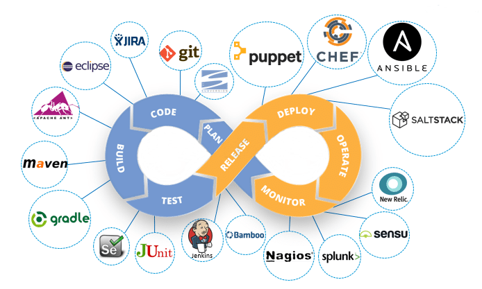

Proceso de desarrollo de software en IT (clásico)
... historia en (muy) pocas palabras ...
- Antes : Modelo en V
- Importancia de producir especificationes detalladas previo a la fase de programación
- Ahora : Modelo Agil
- Separación en funcionalidades esenciales (mínimas) y perifericas (accesorias)
- MVP (Minimum Viable Product)
- Esquema DevOps : conciliación entre la construcción (dev) de un producto (dev) y la puesta (y manuntención) en producción (ops).

Industrialización
- Basada en un conjunto de herramientas (forge) que facilitan la automatización de tareas permitiendo al desarrolador y/o al operador concentrase en las actividades esenciales que necesitan la intervención humana.
